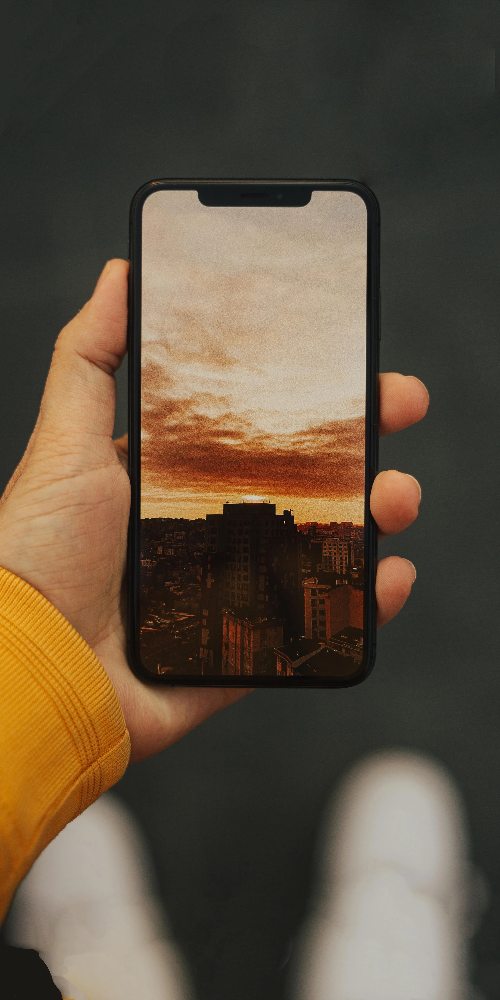

Je m'appelle Florian et je suis un jeune diplomé d'une Licence dans le Webdesign/Web developpement. Je viens d'un DUT MMI, Métiers du Multimédia et de l'Internet, que j'ai aussi réalisé à Mulhouse. Je suis passionné par tout ce qui touche l'internet et le numérique. J'ai réalisé et obtenu mon bac STI2D, Sciences et Technologies de l'Industrie et du Développement Durable. Le fait d'avoir fait un projet en STI2D et en MMI m'a permis de pouvoir travailler en groupe. J'ai réalisé deux stages durant mes études en DUT, tout deux consistaient à réaliser des sites webs et aussi à la maintenance informatique. Dans mon portefolio vous pourrez retrouver certaines réalisation de MMI, mon CV et les principaux réseaux sociaux où je suis présent.